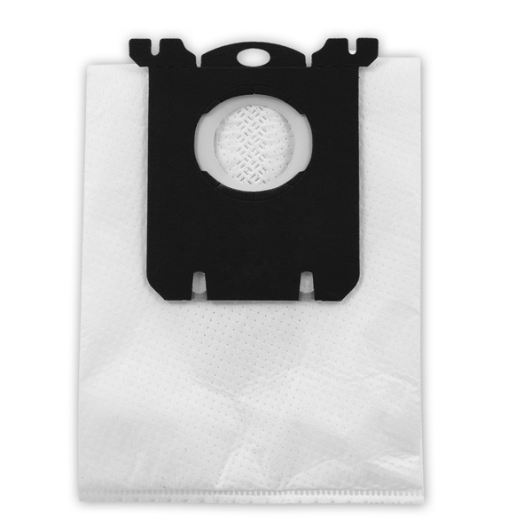

Bork V5D2 Набор пылесборников и фильтров для пылесосов
Мешки-пылесборники BORK V5 D2 выполнены из материал, специально разработанного для качественного сбора пыли. Мешки обладают электростатическими свойствами, что позволяет задерживать более 99.9% мельчайших частиц пыли размером 0.3 микрона, гарантируя высокое качество очистки воздуха и долгий срок службы пылесоса.
Характеристики
Применяются к моделям пылесосов: Bork: V510, V511
Объем пылесборника: 3.5л.
Материал пылесборников: нетканый
Количество слоев: 4
Количество пылесборников в комплекте: 8 шт.
Количество фильтров в комплекте: 1 шт. микрофильтр
Цвет: белый
Модель товара: V5D2
Гарантия: 1 год
Страна-производитель: Нидерланды
В комплект входят 8 пылесборников со сроком службы 1,5 месяца каждый, подходящих для моделей V510,V511. Каждый аксессуар состоит из сменного пылесборника и микрофильтра.